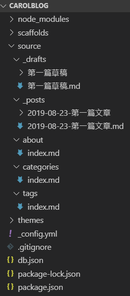

利用 Hexo + GitHub 建立部落格 (五) - 建立文章

講完了 Hexo 的基本 config.yml 設定，現在來說說如何建立文章吧!
建立文章
可使用以下指令創建文章
1 | $ hexo new 文章類型 "檔名" |
文章類型
post：- 一般文章，會在
soruce/_posts資料夾，建立文章名.md的檔案 - 文章名可在
config.yml中的new_post_name，另做設定 - 例如 ：
config.yml中設定new_post_name: :year-:month-:day-:title.md，
輸入指令$ hexo new post "第一篇文章"，會在soruce/_posts資料夾建立2019-08-23-第一篇文章.md檔案
- 一般文章，會在
draft：- 草稿文章，會在
soruce/_draft資料夾，建立文章名.md的檔案 - 例如：
$ hexo new draft "第一篇草稿" - 可利用
$ hexo publish draft "草稿文章名"把草稿發布為一般文章，
此時會轉為 -config.yml中設定new_post_name的檔名 - 一般預設
$ hexo server並不會顯示草稿，可使用$ hexo server --draft開啟伺服器瀏覽 - 可在
config.yml設定render_drafts: true，強制顯示草稿
- 草稿文章，會在
可在
config.yml中設定post_asset_folder: true，
在創建一般文章及草稿文章的同時生成同名資料夾，可用來存放此篇文章的圖片或相關檔案
當草稿使用$ hexo publish "草稿文章名"指令轉為一般文章時，此同名資料夾也會同時移動至_post 資料夾
page：- 不出現在首頁中，通常用來建立
關於我、分類及標籤頁面 - 關於我 頁面：
- 使用
$ hexo new page "about"指令，建立關於我頁面 - 會在
soruce 資料夾內建立about 資料夾，並在此建立index.md檔案
- 使用
- 分類 頁面 ：
- 使用
$ hexo new page "categories"指令，建立分類頁面 - 會在
soruce 資料夾內建立categories 資料夾，並在此建立index.md檔案
- 使用
- 標籤 頁面 ：
- 使用
$ hexo new page "tags"指令，建立標籤頁面 - 會在
soruce 資料夾內建立tags 資料夾，並在此建立index.md檔案
- 使用
- 不出現在首頁中，通常用來建立

更多創建文章相關可看 Hexo 官網 - 寫作
利用 Hexo + GitHub 建立部落格 系列文章